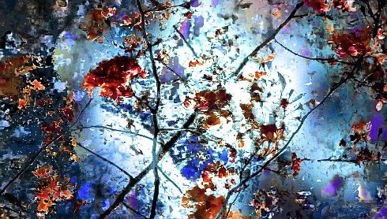

Traces of Garden

Wolfgang Lehmann
|
SE/DE
2014-16 P+V: Wolfgang Lehmann – M: Ralf Freudenberger – Mit Amparo Tamayan & Shichiro Ozu
|
sonntag 14 okt 20.00 werkstattkino
Energiegeladene Meditation über Farben, Formen und Bewegung. Das Material ist die Natur: Blüten, Äste, Wasser, der blaue Himmel, alles ergießt sich neo-impressionistisch in leuchtenden Farben auf die Kino-Leinwand, als hätten sie Manet & Monet bemalt.
Wolfgang Lehmann Geb. 1967 in Freiburg/Breisgau. Seit 1994 zahlreiche Filme. Er lebt und arbeitet in Stockholm, Schweden, sowie bei Hamburg. |
| Films Selbstbildnis als Akt; Studie Nr. 2 2002/03 – Der Klang des Meeres (zusammen mit Telemach Wiesinger) 2005 – Libellen mit Vögeln und Schlange 2011 (8. UX) |